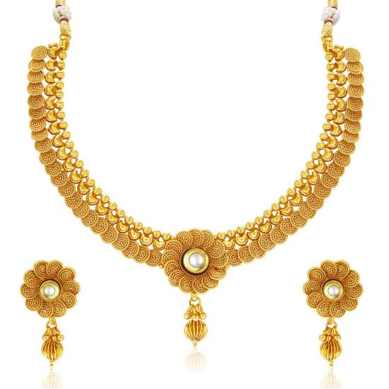
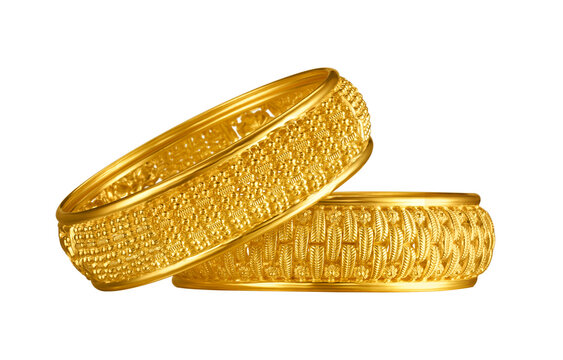
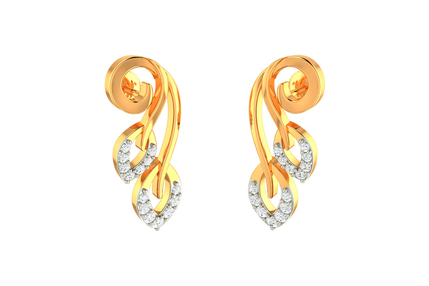

Gold necklaces are often considered
a symbol of status and wealth and are
commonly given as gifts for special
occasions such as weddings, birthdays,
or anniversaries. They can be worn with
a variety of outfits, from formal evening
wear to casual everyday clothing.


Gold bangles have been worn for centuries
in many cultures and are often considered
a symbol of femininity and elegance. They
can be worn alone/stacked with other bangles
and bracelets for a more layered look.
Gold rings are often worn as a symbol of
commitment,such as wedding bands,
engagement rings,or promise rings.
They can also be worn as a fashion accessory
or to mark a special occasion,
such as a graduation or anniversary.

Gold earrings can be worn by both men
and women and can come in a variety of
sizes to fit different earlobes.
They can be worn for both formal and
casual occasions and can add a touch of
sophistication and glamour to any outfit.
Gold necklaces are often considered
a symbol of status and wealth and are
commonly given as gifts for special
occasions such as weddings, birthdays,
or anniversaries. They can be worn with
a variety of outfits, from formal evening
wear to casual everyday clothing.
Gold bracelets are often worn as a fashion
accessory or to mark a special occasion,
such as a birthday, anniversary, or graduation.
They can be worn alone or stacked with other
bracelets for a more layered look.